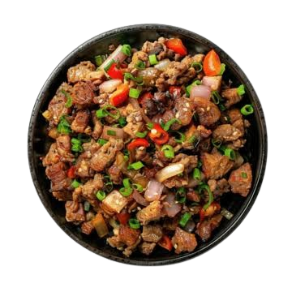

Famous Cuisines In Regions Of Luzon, Visayas & Mindanao
Explore easy-to-follow recipes that Filipinos love, perfect for everyday meals and special celebrations.

💡 Culinary Fact
Pampanga in Central Luzon is officially recognized as the Culinary Capital of the Philippines, home to authentic Sisig.